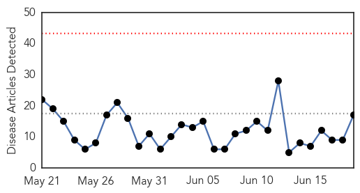
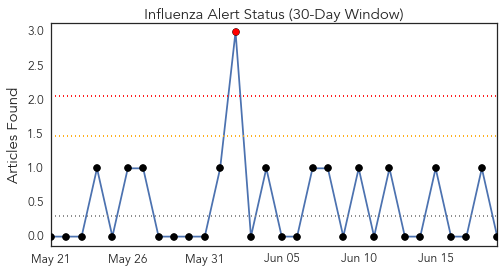
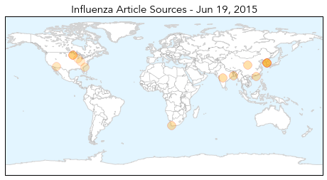
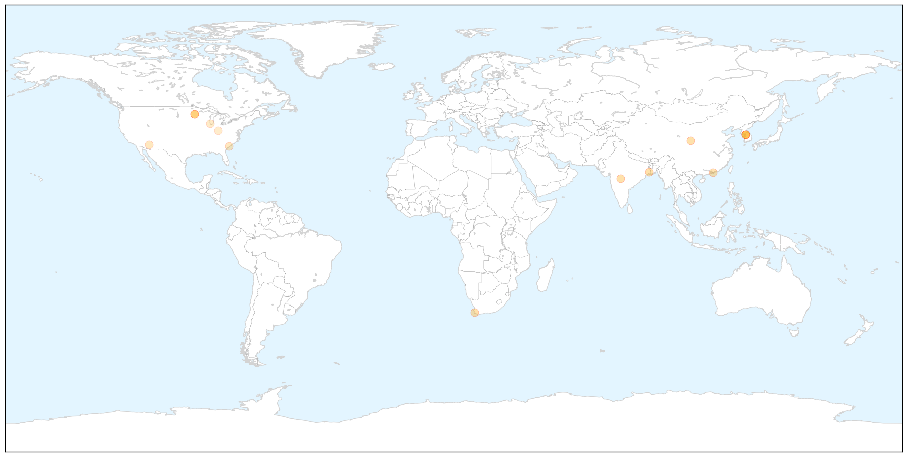
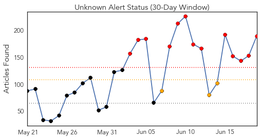
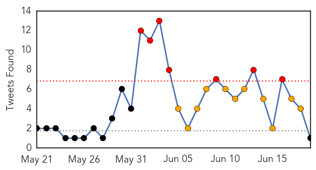
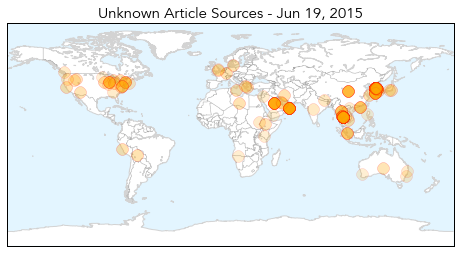
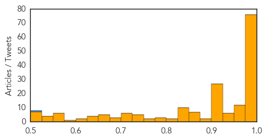

Influenza
30-Day Web Trend
0 alerts, 0 warnings

30-Day Twitter Trend
0 alerts, 0 warnings

Article Locations

X

Article Confidences

Top Articles:
- 0.998
- Adults go to pediatricians for flu vaccine, say doctors
- 0.989
- Doctors spell out flu risks among kids during monsoon
- 0.983
- Science, Technology and Medicine News Updates From Asia
- 0.977
- SA 'in for a bad flu season'
- 0.957
- Time to pick ourselves up-INSIDE Korea JoongAng Daily
- 0.955
- North Korea claims to have MERS cure
- 0.925
- H3N2 flu active again, claims 16 lives in HK in 6 days
- 0.900
- Pyongyang claims to invent cure for MERS
- 0.761
- Dog adopted in St. Paul tests positive for canine flu
- 0.751
- June 18, 2015 Archives
- 0.751
- June 18, 2015 Archives
- 0.751
- June 18, 2015 Archives
- 0.751
- June 18, 2015 Archives
- 0.655
- Twin Cities see first known case of canine influenza at St. Paul shelter
- 0.609
- Secret Vaccine Court
- 0.568
- Minnesota records 13 straight days with no new bird flu
- 0.557
- Turning the corner on bird flu? 2 weeks without a new case
Top Tweets:
-
No tweets found for Jun 19, 2015
Unknown
30-Day Web Trend
13 alerts, 3 warnings

30-Day Twitter Trend
7 alerts, 1 warnings

Article Locations

Article Confidences
Top Articles:
- 1.000
- WHO chief voices optimism over S Korea MERS outbreak
- 0.999
- Thai PM Urges Calm as MERS Case Confirmed
- 0.999
- South Korea Says MERS Outbreak Shows Signs of Subsiding
- 0.999
- S. Korea says MERS outbreak shows signs of subsiding
- 0.999
- South Korea says MERS outbreak shows signs of subsiding
- 0.999
- S. Korea says MERS outbreak shows signs of subsiding, AsiaOne Asia News
- 0.999
- First MERS case confirmed in Thailand: public health minister
- 0.999
- 1st MERS case confirmed in Thailand
- 0.998
- Confidence rises over MERS containment
- 0.998
- South Korea at 24 Deaths, Thailand Confirms First Case
- 0.998
- South Korean Official Says MERS Outbreak Seems to Be Easing
- 0.998
- S. Korea Says MERS Outbreak Shows Signs of Subsiding — Naharnet
- 0.998
- Confidence rises over MERS containment
- 0.998
- Thailand confirms its first case of MERS, death toll rises to 24 in South Korea
- 0.998
- South Korea says MERS outbreak shows signs of subsiding
- 0.998
- South Korea says Mers outbreak shows signs of subsiding, Government & Economy
- 0.998
- The World On Arirang
- 0.998
- MERS outbreak levels off in S. Korea
- 0.998
- Nation's First Mers Case Strikes
- 0.997
- Tourist first MERS case in Thailand, news, Health News, AsiaOne YourHealth
- 0.997
- Thailand’s first case of MERS confirmed
- 0.997
- Mers virus: fears of further spread as Thailand confirms its first case
- 0.997
- S. Korea Says MERS Outbreak Shows Signs of Subsiding
- 0.997
- South Korea MERS outbreak subsides as new case reported
- 0.997
- Omani businessman kept in Thailand hospital isolation as tests confirm MERS
- 0.997
- No new patients from Samsung Medical Center-INSIDE Korea JoongAng Daily
- 0.997
- Thailand says 175 exposed to MERS patient; South Korea reports no new case
- 0.996
- MERS claims 24th victim in South Korea
- 0.996
- 5 break MERS quarantine to return to Japan ‹ Japan Today
- 0.996
- The World On Arirang
- 0.996
- Corrected count is three new MERS cases, three deaths
- 0.995
- South Korea reports 20th MERS death
- 0.995
- Mers in Thailand: First case of virus confirmed
- 0.995
- Mers outbreak in South Korea shows signs of subsiding
- 0.995
- WHO Says MERS Outbreak In South Korea Is Not A Global Emergency
- 0.995
- Thailand Confirms 1st MERS Case, South Korean PM Apologizes for Slow Response
- 0.995
- Thailand confirms first MERS case
- 0.995
- Thailand confirms first MERS case
- 0.995
- (LEAD) S. Korea reports another MERS death, one new case
- 0.995
- South Korea says MERS outbreak shows signs of subsiding
- 0.994
- CORRECTED-WRAPUP 2-Thailand took four days to confirm first MERS case; scores monitored
- 0.994
- Omani MERS patient's relatives tested for virus in Thailand
- 0.994
- Omani MERS Patient's Relatives Tested for Virus in Thailand — Naharnet
- 0.994
- MERS spreads to Thailand By Reuters
- 0.994
- Thailand confirms first MERS case
- 0.994
- Thailand reports first confirmed case of Middle East Respiratory Syndrome, MERS, in 75-year-old man from Oman
- 0.994
- Thailand took four days to confirm first MERS case; scores monitored
- 0.994
- Omani MERS patient's relatives tested for virus in Thailand
- 0.994
- Sudan Vision Daily
- 0.994
- Thailand confirms first MERS case as virus spreads in Asia
Showing top 50 articles...
Top Tweets:
- 0.508
- Fayoum health confirms H5N1 bird flu case after test is positive from Ministry of Health http://t.co/506V97S0sC